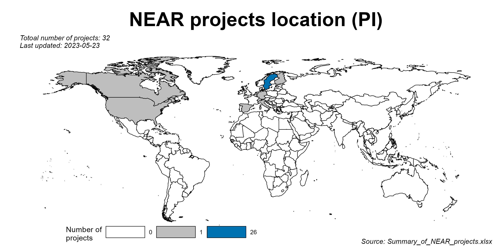
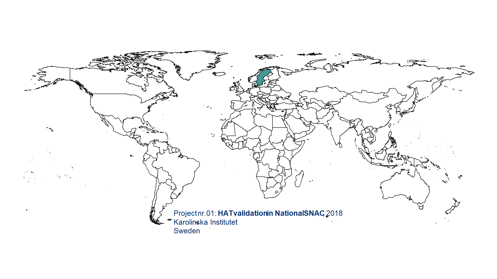

Installation
You can install the development version of neartools from GitHub with:
# install.packages("devtools")
devtools::install_github("Bolin-Wu/neartools", force = TRUE)Core Functionality
- Data Exploration & Variable Discovery Quickly locate variables or examine column metadata across multiple datasets in your global environment.
library(neartools)
# Load example data into Global Environment
data("fake_snacn_ph_fu")
data("fake_snacn_ph_wave3")
# Search for variables starting with 'ph' across SNAC-N datasets
get_vars_by_pattern(data_pattern = "^fake_snacn_ph", var_pattern = "^ph")
# Get comprehensive column metadata (labels, NA percentages, etc.)
get_all_colnames(df_name = c("fake_snacn_ph_fu", "fake_snacn_ph_wave3"))- Bulk Data Import & Export Manage multiple files simultaneously, including specialized conversions for SPSS data.
# Import all supported files in a folder
import_bulk(data_dir = "path/to/data", file_type = "all")
# Convert all .sav (SPSS) files in a directory to .csv
export_sav_to_csv(target_dir = "path/to/spss_files")- Data Cleaning Utilities Standardize and clean data frames with specialized utility functions:
- Uniqueness Checks:
get_unique_join()performs joins while ensuring uniqueness to prevent row inflation. - Missing Values:
fix_empty_string()converts empty strings to NA across a dataframe. - Date Parsing:
get_date_digit()extracts standardized date components from numeric strings. - Label Management:
get_label_df()creates a tidy tibble of variable labels and types.
Template Generation
Generate standardized R Markdown templates for HTML, PDF, or Word reports:
get_pretty_template(type = "html", output_dir = "reports")Changelog
Please check NEWS.md for history updates.